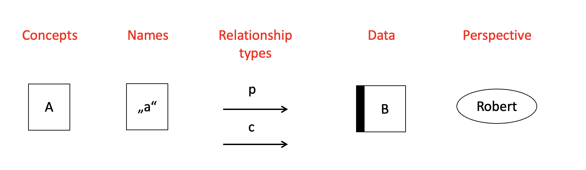
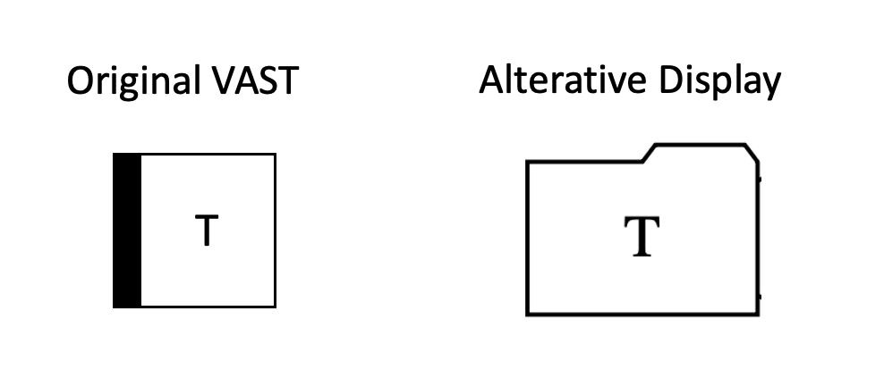
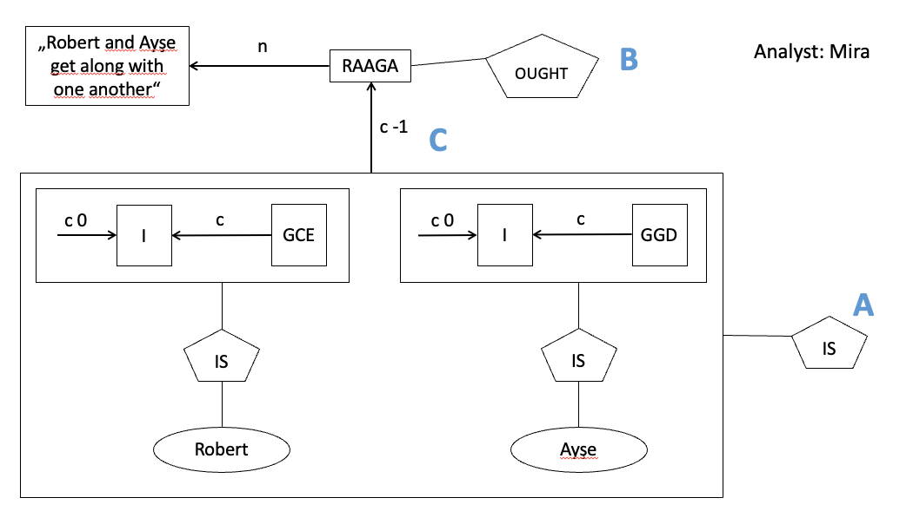

How to formalize a verbal theory with VAST
Visual Argument Structure Tool (VAST) by Leising, Grenke & Cramer
![]()
Where do theories come from?
- Falsificationism starts with a (tentative) theory, which is repeatedly tested, refuted, and refined.
- But where does the initial theory come from? “Flair”? Flash of inspiration in the shower?
- Popper did not care much about the first stage of creating theories - just about the later testing of theories.
Conjecture: We have a refined methodology¹ to test theories (e.g., experimental designs, statistical methods, preregistration, …). But we had (so far) no good methodology for constructing theories.
¹ “A scientific methodology is an ordered series of steps that assist a researcher in reaching a desired end state from a specified starting point.” (Borsboom et al., 2021)

“Abduction” actually refers to the process of coming up with a theory.
Visual Argument Structure Tool (VAST) V1.0
Introduction
This is a brief introduction into some of the core features of VAST. In doing this, I will simplify a few features and ignore others completely.
Types of elements (selection)

Arrows stand for IF-THEN relationships
If X, THEN Y
Six types of relationships:
- naming (n)
- conceptual implication (i)
- causation (c)
- prediction (p)
- transformation (t)
- reasoning (r)
Naming concepts
- The
Iin the box symbolizes a concept- A concept is an idea about a condition that may or may not apply to certain objects (e.g., people)
- The labels of concepts (i.e.,
I) are abstract and basically arbitrary
- The
nstands for a naming relationship - A name is a word (or sentence, or paragraph) that is used to describe those objects to which a concept applies. Names (or “labels”) are set in quotation marks
""in VAST displays.
Naming concepts
Synonyms
A concept may have any number of names. Here, all three names are synonyms regarding concept I.
Naming concepts
Homonyms
This expresses the idea that the same name is used for conditions that may not be the same. This name might thus be a homonym.
Naming concepts
Visualizing a jingle-jangle situation
- “Big” = jingle for
FandT - “Big” and “Famous” = jangle for
F
Data
- Data (left box, folder-shaped) is a special kind of concept, which explicitly refers to something observable.
- Same as a manifest variable in Structural Equation Modeling
- This display is supposed to capture the idea that “Intelligence is what the intelligence test measures”
Data
Symbol
Note: In the original VAST paper, the Data concept has a different shape (but that shape is not available in the Graphviz system used to create the graphs in this presentation):

Data
- The
rdenotes reasoning relationships - This display is supposed to capture the idea that more than one test may be used as evidence for people‘s intelligence
Data
- The
pstands for a prediction - The
cstands for causal effects
Data
This display is supposed to capture the idea that …
- The same thing has a causal effect on the outcomes of both tests
- Therefore, the outcomes of the two tests correlate with one another
Splitting up the display elements 1
Readability may often be promoted by setting naming relationships aside.
Splitting up the display elements 2
Strength of relationship
- Default interpretation of a directional arrow
X→Y: this relationship is considered relevant and positive (i.e., the more X the more Y) - Relationship strength can be expressed with a number between -1 (perfect negative relationship), 0 (no relationship), and 1 (perfect positive relationship)
- If no number is explicitly specified: default relationship strength is “> 0”
- The strength of a relationship can also be expressed in a vague verbal way, e.g., “strong”, “weak”, “negative”, …
- The relationship strength can be applied to any relationship type:
- type
p: “wearing glasses” makes it 70 percent likely for a person to also be “smart” - type
r: It is 90 percent reasonable to assume someone “is in love with you” when that person “giggles a lot while talking to you” - type
c: being “obese” makes it 50 percent likely for someone to develop “Diabetes Type II” as a consequence
- type
Fuzziness as a feature
- The goal are precise theories - but in reality, they often are (at least partially) vague and fuzzy
- VAST allows to make this fuzziness explicit by allowing vague quantifiers of relationship strength, e.g. “weakly positive”, “strong”, “>0.5”
- Better than assigning an arbitrary, pseudo-precise number
- It’s about formalizing the current state/precision of a verbal theory - if it is imprecise, let’s show it!
- Show gaps, underspecifications, and inconsistencies in the theory
Notes on the different types of relationships
- Relationships between constructs can be …
- on a theoretical level. Then it’s typically a causal path (
c) - on empirical level: A relationship has been found! This is a prediction path (
p) - Research cycle: One author’s exploratory
p-path is the next author’s theoreticalc-path
- on a theoretical level. Then it’s typically a causal path (
- Consider what you want to formalize:
- A certain author’s theoretical point of view at a certain point in time?
- Or your personal, current point of view?
- The empirical support for a statement?
Exercise: How would you interpret this?

Exercise: How would you interpret this?
(A): “Mira is assumes that she has presented Robert’s and Ayse’s views correctly (with strength > 0.5, which is the default for IS and OUGHT elements). This implies that these two have different and incompatible statements about the single causal effect on I.
(B): Mira says (normatively) that Robert and Ayse should get along well.
(C): Mira is certain (relationship strength = -1) that the big box below (i.e., the incompatible views) causally leads to Robert and Ayse not getting along well.
End
Contact
- @nicebread@scicomm.xyz
- ed.uml.ysp@tdorbneohcs.xilef
- https://www.nicebread.de
- https://github.com/nicebread